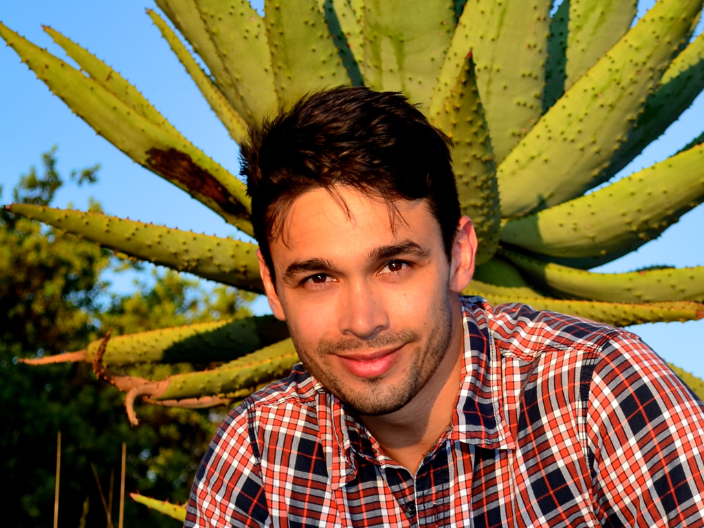

About the Founder
Samir Randera-Rees
Founder, CEO, voice artist and photographer
I grew up in a family with a strong social conscience. Both my parents are doctors who were politically active in the anti-Apartheid struggle, and that desire to make the world a better place is deeply embedded within me. My passions however, lie not in healing the human body, but in healing the planet.
From a young age, I was always fascinated by the natural world. Growing up in Johannesburg, I would explore the deepest recesses of my garden in search of living creatures. Books and nature documentaries transported me into magical worlds, where plants, predators and prey danced in a ruthless struggle for survival. But there was nothing I loved more than escaping to the game reserve, to see this dance first hand.
After school I moved south, to live and study in the shadow of the mountain. I completed my BSc in Environmental Science and Economics at the University of Cape Town. However, learning about nature in a classroom is hollow without first hand knowledge of its wonders, so I then spent time acquiring my first nature guide qualification. I could finally walk through the bush and feel an intimacy with nature that I had never felt before, and it made me want more. I completed two more guiding and tracking courses, before moving to Europe on a scholarship to continue my ecological studies. I was given the opportunity to travel around Europe, studying conservation ecology at different institutions in France, Portugal and England, before returning to the Kruger Park region to complete my thesis on carnivore interactions. Through all this, the most powerful message that I learnt is that you cannot conserve nature without reducing poverty and preserving human dignity.
In between all that studying I took every opportunity to travel, experience new things and meet new people. From training wild donkeys on a farm in Namibia to guiding unruly volunteers in a nature reserves, to learning about sustainable forestry in the Brazilian Amazon, I have seen some incredible sights, and met some fascinating people.
However I am still a child at heart. I love to laugh and joke, I’m a thrill seeker who can often be found doing stupid things like climbing up sheer cliff faces. I’m a huge sport fan, and most days you will find me on a court or field, playing with a ball of some description. However my family remains the most important thing in my life.
Unfortunately my days of studying and carefree wandering are behind me for now. Today, apart from developing Whispers of the Wild, I am a presenter on the longest running nature show in the world, 50|50. Mine is one of the voices you will hear on the app, and as a keen amateur photographer, I took the liberty of using some of my photos too. Through these activities I hope to convey some of my passion for nature to a wider audience.

Share the app to unlock 5 Animals